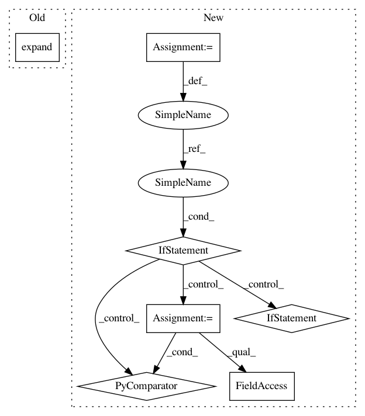

cea478600970228f6b8dd12b067facde3d5d261f,gpytorch/models/exact_gp.py,ExactGP,get_fantasy_model,#ExactGP#Any#Any#,85
Before Change
batch_shape = input.shape[:-2]
elif input.dim() < targets.dim():
batch_shape = targets.shape[:-2]
inputs[i] = input.expand(*batch_shape, *input.shape[-2:])
train_inputs = [tin.expand(*batch_shape, *tin.shape[-2:]) for tin in list(self.train_inputs)]
train_targets = self.train_targets.expand(*batch_shape, *self.train_targets.shape[-2:])
After Change
batch_shape = targets.shape[:-1]
elif input.dim() < targets.dim():
batch_shape = targets.shape[:-2]
same_inputs = True
else:
raise Exception("Usupported dimensions")
if not same_inputs:
train_inputs = [tin.expand(*batch_shape, *tin.shape[-2:]) for tin in list(self.train_inputs)]
else:
train_inputs = self.train_inputs
train_targets = self.train_targets.expand(*batch_shape, *self.train_targets.shape[-2:])
full_inputs = [torch.cat([train_input, input], dim=-2) for train_input, input in zip(train_inputs, inputs)]
full_targets = torch.cat([train_targets, targets], dim=-1)
try:
fantasy_kwargs = {"noise": kwargs.pop("noise")}
except KeyError:
fantasy_kwargs = {}
full_output = super(ExactGP, self).__call__(*full_inputs, **kwargs)
// Copy model without copying training data or prediction strategy (since we"ll overwrite those)
old_pred_strat = self.prediction_strategy
old_train_inputs = self.train_inputs
old_train_targets = self.train_targets
old_likelihood = self.likelihood
self.prediction_strategy = None
self.train_inputs = None
self.train_targets = None
self.likelihood = None
new_model = deepcopy(self)
self.prediction_strategy = old_pred_strat
self.train_inputs = old_train_inputs
self.train_targets = old_train_targets
self.likelihood = old_likelihood
if same_inputs:
new_model.train_inputs = [fi.expand(batch_shape + fi.shape) for fi in full_inputs]
else:
new_model.train_inputs = full_inputs
new_model.train_targets = full_targets
new_model.likelihood = old_likelihood.get_fantasy_likelihood(**fantasy_kwargs)
new_model.prediction_strategy = old_pred_strat.get_fantasy_strategy(
inputs,
In pattern: SUPERPATTERN
Frequency: 3
Non-data size: 7
Instances
Project Name: cornellius-gp/gpytorch
Commit Name: cea478600970228f6b8dd12b067facde3d5d261f
Time: 2019-05-08
Author: balandat@fb.com
File Name: gpytorch/models/exact_gp.py
Class Name: ExactGP
Method Name: get_fantasy_model
Project Name: cornellius-gp/gpytorch
Commit Name: cea478600970228f6b8dd12b067facde3d5d261f
Time: 2019-05-08
Author: balandat@fb.com
File Name: gpytorch/models/exact_gp.py
Class Name: ExactGP
Method Name: get_fantasy_model
Project Name: sympy/sympy
Commit Name: 24602abe9b89c6b22f77804636de2f109f1c6052
Time: 2020-07-04
Author: smitlunagariya.mat18@itbhu.ac.in
File Name: sympy/stats/symbolic_multivariate_probability.py
Class Name: ExpectationMatrix
Method Name: expand
Project Name: sympy/sympy
Commit Name: 24602abe9b89c6b22f77804636de2f109f1c6052
Time: 2020-07-04
Author: smitlunagariya.mat18@itbhu.ac.in
File Name: sympy/stats/symbolic_probability.py
Class Name: Expectation
Method Name: expand